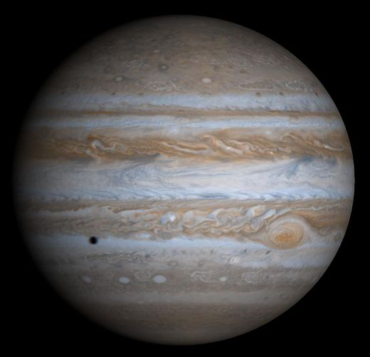

Jupiter is classified as a large gas giant

Jupiter
Jupiter is the fifth planet from the Sun and the largest planet in the Solar System. It is a gas giant with mass one-thousandth of that of the Sun but is two and a half times the mass of all the other planets in the Solar System combined. Jupiter is classified as a gas giant along with Saturn, Uranus and Neptune. Together, these four planets are sometimes referred to as the Jovian or outer planets.
Orbital Characteristics
- Aphelion
- 816520800 km
- Perihelion
- 740573600 km
- Semi-major axis
- 778547200 km
- Eccentricity
- 0.048775
Physical Characteristics
- Mean radius
- 69911±6 km
- Equatorial radius
- 71492±4 km
- Polar radius
- 66854±10 km
- Flattening
- 0.06487±0.00015